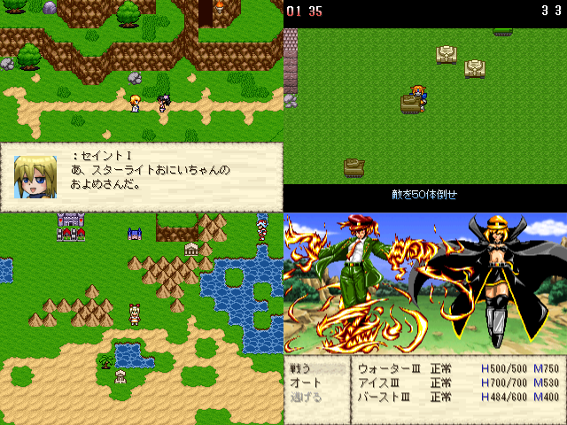

| |
 |
|
| 作者：ムサシ | |
| ツクール：2000 | |
| 作者コメント： -セイントⅠ編【小話集】 セイントⅠ主体で見る小話集です。 プレイ時間はおよそ１５分～２０分となっております。 また約３分ごとに中間セーブポイントがあります。 お手軽さにプレイできるのが魅力となっています。 -セイントⅡ編【探索系やるゲ】 セイントⅡの探索系ゲームです。 アイテムや助っ人の力を借りてダンジョンを攻略しましょう。 ク リアまでの手順によって大きく難易度、プレイ時間が変動します。 あなたは全てのアイテムとスキルをそろえることができますか？ -セイントⅢ編【見るゲ、時々やるゲ】 セイントⅢ達の見るゲです。 ゲームクリアまでにデフォ戦やミニゲームがあります。 ストーリーはあってないようなものです。過度な期待はしないでください。 デフォ戦とミニゲームの難易度は低めに設定しています。(作者の体感) |
|
| 管理人コメント： 一本で三度美味しい |
|
| ダウンロード(22.1MB 08/18更新) / 感想掲示板 | |
| 前の作品 / 次の作品 / TOPへ戻る | |